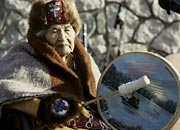
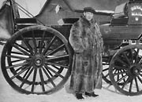
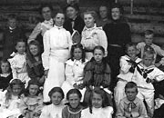
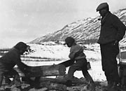
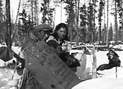
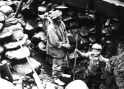
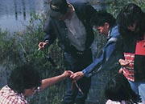

For many people, especially First Nations people, it is important to educate young people in a variety of ways. Behaviours and customs are passed on from generation to generation by example and by stories. Elders are held in great respect for their wisdom and experience, and storytelling is a valued part of the passing down of knowledge.
Missionaries provided basic schooling for First Nations children in the early years, but as communities stabilized more formal schools became established. Even though Dawson was a growing city by 1897, one contemporary observer noted that because of high wages and the high cost of lumber, it would probably be another year before a school building was complete.
The churches established both day schools and residential schools for First Nations children. Although the residential schools provided an education and allowed students to meet fellow students from other places and groups, they took children away from their families and their culture. Church-run residential schools continued to operate until the 1960s.
The territorial government built a network of public schools from 1900 on, and since June 1963 has offered post-secondary education. First Nations students are educated in their own communities now and all students have the opportunity to study Yukon aboriginal languages, culture and history close to home. Recent initiatives include French immersion, virtual classrooms and distance education.
"You learn it from your mothers and fathers. You learn it from your grandmothers, your grandfathers."
Clara Schinkel
Walking Together/Ditth'ëk Ts'ä Tr'ëtädal
Continue to Where one likes to be"Old style words are just like school."
Annie Ned: Life Lived Like a Story.
(Above) Students outside Dawson City Public School, 1913.
YA, Betts collection #9432
Angela Sidney at the opening of Yukon College. She gave the college its Tlingit name, Ay Am Da Goot (Ayamdigut) “She got up and went”.
Government of the Yukon
Bill MacBride, c.1956. MacBride was instrumental in the creation of the MacBride Museum, one of the places that help us preserve and learn about our past.
YA, Hunston collection #2355
A community school in the gold fields, n.d.
YA, Adams, Larkins and Cantwell collection #9082
John Martin watches his sons saw wood, Ross River, April 1928.
YA, Tidd collection #7158
Pearl Geddes and her cousin George Jackson take a lunch break on a trip to Hundred Mile. They transported Reverend Robert Ward to visit a family there, c.1940. They had learned the skills of winter travel from their families.
YA, Ward collection #8814
Arthur Hester mines with the assistance of young Alex Hare, Davidson Creek, Mayo area, c.1940s.
YA, Hare collection #6993
Hazel Bunbury with a group of aboriginal language students.
YA, Yukon Native Language Centre collection